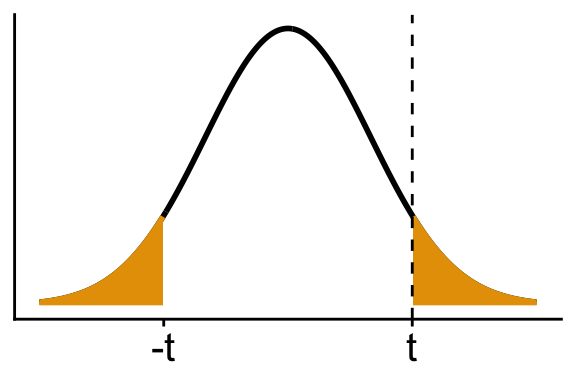
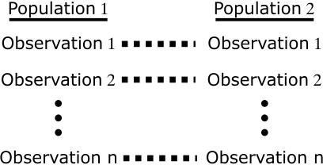
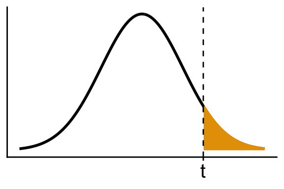
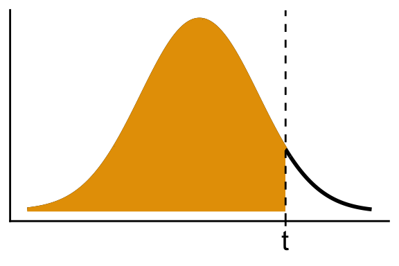
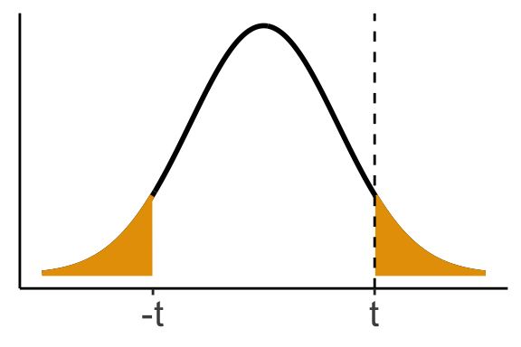
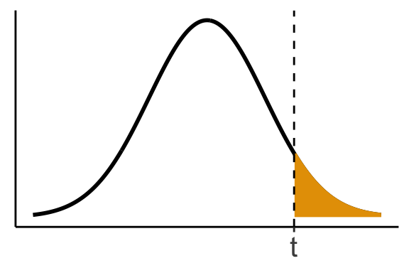
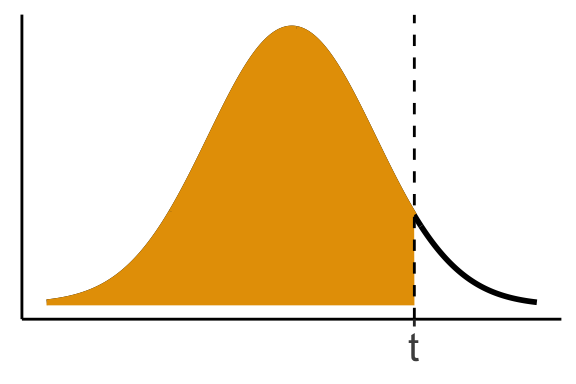
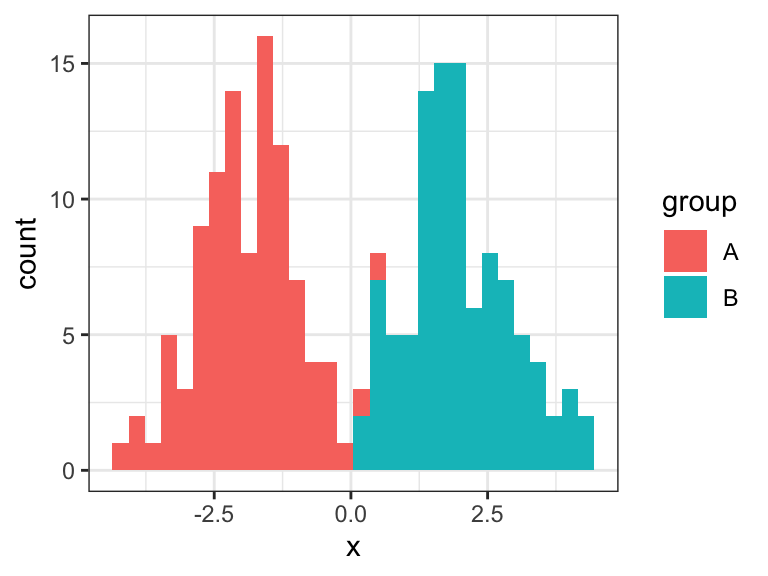

Chapter 8: Two-sample Inference
Paired t-test
Compare 2 populations where parameters are not known.
A paired sample is where observations in each population are matched.

Example: Twin study where one twin smokes more than the other.
- Population 1: lighter smoking twins
- Population 2: heavier smoking twins
- Matched pair: each pair of twins
Example: We measure blood pressure on the same individual at 2 time points
- Population 1: pre oral contraceptive (OC)
- Population 2: post OC
- Matched pair: the same individual
This second example is one of a longitudinal study, where we follow the same people over time
Let
- \(X_i \sim N(\mu_i, \sigma^2)\)
- For example, pre-OC
- For example, pre-OC
- \(Y_i \sim N(\mu_i + \Delta, \sigma^2)\)
- For example, post-OC
- \(X_i \sim N(\mu_i, \sigma^2)\)
Hypotheses:
\(H_0\): \(\Delta = 0\)
\(H_1\): \(\Delta \ne 0\)This tests if there is a difference between populations while allowing each pair to have their own baseline mean \(\mu_i\).
Define differences:
\(D_i = Y_i - X_i \sim N(\Delta, \sigma_D^2)\)Variance of differences:
\(\sigma_D^2 = \text{var}(X) + \text{var}(Y) - 2\ \text{cov}(X, Y)\)- But this is a nuisance parameter, so just call it \(\sigma_D^2\)
So, just use a one-sample t-test on \(D_i\)
Important
A paired t-test is just a one-sample t-test on differences.
Paired t-test
Input: \(X_1,X_2,\ldots,X_n\) and \(Y_1,Y_2,\ldots,Y_n\) where \(X_i\) and \(Y_i\) are matched pairs.
We assume \(X_i \sim N(\mu_i, \sigma_x^2)\) and \(Y_i \sim N(\mu_i + \Delta, \sigma_y^2)\).
We test:
- \(H_0: \Delta = d_0\)
- \(H_A: \Delta \neq d_0\) or \(\Delta > d_0\) or \(\Delta < d_0\).
- where \(d_0\) = null mean difference between populatoins (e.g. 0)
We calculate:
- \(D_i = X_i - Y_i\)
- \(s_D\) = standard deviation of \(D_i\)’s
- \(\bar{D}\) = mean of \(D_i\)’s
The \(t\) statistic follows a \(t_{n-1}\) distribution if \(H_0\) is true: \[ t = \frac{\bar{D} - d_0}{s_D / \sqrt{n}} \]
\(H_1: \Delta \neq d_0\): \[ \text{p-value} = 2\texttt{pt}(-|t|, n-1) \]
\(H_1: \Delta > d_0\): \[ \text{p-value} = 1 - \texttt{pt}(t, n-1) \]

\(H_1: \Delta < d_0\): \[ \text{p-value} = \texttt{pt}(t, n-1) \]

A \((1 - \alpha) \cdot 100\%\) confidence interval for \(\Delta\) is: \[ \bar{D} \pm t_{n-1, 1 - \alpha/2} \cdot \frac{s_D}{\sqrt{n}} \]
Two-sample t-tests with equal variances
More commonly, studies have 2 independent samples.
Example:
- Collect one group of OC users
- Collect a separate group of non-OC users
- Collect one group of OC users
Cross-sectional study: data collected at one point in time (units under different conditions)
Assume: \[ X_1, X_2, \ldots, X_{n_1} \overset{\text{iid}}{\sim} N(\mu_1, \sigma_1^2) \] \[ Y_1, Y_2, \ldots, Y_{n_2} \overset{\text{iid}}{\sim} N(\mu_2, \sigma_2^2) \]
Note: different sample sizes are possible, and the observations are not paired.
Hypotheses:
- \(H_0\): \(\mu_1 = \mu_2\)
- \(H_1\): \(\mu_1 \ne \mu_2\), or \(\mu_1 < \mu_2\), or \(\mu_1 > \mu_2\)
For now, assume \(\sigma_1^2 = \sigma_2^2 = \sigma^2\)
- Assumes the two populations have the same variability, which is often not valid.
- We will relax this later
We observe:
- \(\bar{X} =\) mean of \(X_i\)’s
- \(\bar{Y} =\) mean of \(Y_i\)’s
- \(s_1^2 =\) sample variance of \(X_i\)’s
- \(s_2^2 =\) sample variance of \(Y_i\)’s
- \(n_1 =\) sample size 1
- \(n_2 =\) sample size 2
- \(\bar{X} =\) mean of \(X_i\)’s
Consider \(\bar{X} - \bar{Y}\)
\[ E[\bar{X} - \bar{Y}] = E[\bar{X}] - E[\bar{Y}] = \mu_1 - \mu_2 \]
- Equals 0 under \(H_0\), not 0 under \(H_1\)
Variance of difference:
\[\begin{align*} \text{Var}(\bar{X} - \bar{Y}) &= \text{Var}(\bar{X}) + \text{Var}(\bar{Y}) - 2\,\text{Cov}(\bar{X}, \bar{Y})\\ &= \frac{\sigma^2}{n_1} + \frac{\sigma^2}{n_2} \\ &= \sigma^2 \left(\frac{1}{n_1} + \frac{1}{n_2} \right) \end{align*}\] (Covariance term is 0 due to independence)
Therefore, by properties of the normal distribution: \[ \bar{X} - \bar{Y} \sim N\left(\mu_1 - \mu_2, \sigma^2\left(\frac{1}{n_1} + \frac{1}{n_2} \right)\right) \]
If \(\sigma^2\) were known, then could base our test on the distribution of the mean divided by the standard deviation:
\[ \frac{\bar{X} - \bar{Y}}{\sqrt{\frac{1}{n_1} + \frac{1}{n_2}}} \sim N(0, 1) \]
We could then compare this statistic to a \(N(0,1)\) distribution to get p-value.
However, \(\sigma^2\) is never known in practice, so we need to estimate it.
Pooled Sample Variance
- Assuming \(\sigma_1^2 = \sigma_2^2 = \sigma^2\), then we estimate \(\sigma^2\) with the pooled sample variance:
\[ s^2 = \frac{(n_1 - 1)s_1^2 + (n_2 - 1)s_2^2}{n_1 + n_2 - 2} \]
The pooled sample variance can equivalently be written as:
\[ s^2 = \frac{n_1 - 1}{n_1 + n_2 - 2} s_1^2 + \frac{n_2 - 1}{n_1 + n_2 - 2} s_2^2 \]
- This should show you that higher weight goes to the sample with larger \(n\)
Our test statistic becomes:
\[ \frac{\bar{X} - \bar{Y}}{s \sqrt{\frac{1}{n_1} + \frac{1}{n_2}}} \]
This follows a \(t_{n_1 + n_2 - 2}\) distribution only if \(H_0\) is true.
- It follows something else if \(H_1\) is true.
Two-sample t-test with Equal Variances
Input: \(X_1, X_2, \ldots, X_{n_1}\) and \(Y_1, Y_2, \ldots, Y_{n_2}\) (sample sizes might be different)
We assume \(X_i \sim N(\mu_1, \sigma^2)\) and \(Y_i \sim N(\mu_2, \sigma^2)\).
- Equal variances, possibly different means
We test:
- \(H_0: \mu_1 = \mu_2\)
- \(H_A: \mu_1 \neq \mu_2\) or \(\mu_1 > \mu_2\) or \(\mu_1 < \mu_2\).
We calculate:
- \(\bar{X}\), \(\bar{Y}\), and the pooled sample variance \[ s^2 = \frac{(n_1 - 1)s_1^2 + (n_2 - 1)s_2^2}{n_1 + n_2 - 2} \]
The \(t\) statistic follows a \(t_{n_1 + n_2 - 2}\) distribution if \(H_0\) is true: \[ t = \frac{\bar{X} - \bar{Y}}{s \sqrt{\frac{1}{n_1} + \frac{1}{n_2}}} \sim t_{n_1 + n_2 - 2} \]
\(H_1: \mu_1 \neq \mu_2\): \[ \text{p-value} = 2\texttt{pt}(-|t|, n_1 + n_2 - 2) \]

\(H_1: \mu_1 > \mu_2\): \[ \text{p-value} = 1 - \texttt{pt}(t, n_1 + n_2 - 2) \]

\(H_1: \mu_1 < \mu_2\): \[ \text{p-value} = \texttt{pt}(t, n_1 + n_2 - 2) \]

A \((1 - \alpha)100\%\) confidence interval is
\[ (\bar{X} - \bar{Y}) \pm t_{n_1 + n_2 - 2,\ 1 - \alpha/2} \cdot s \sqrt{\frac{1}{n_1} + \frac{1}{n_2}} \]
Two-sample t-test in R, equal variance
Test for Equal Variances
Because of the equal variance assumption above, folks have developed statistical tests for whether the variances are indeed equal.
Let: \[ X_i \sim N(\mu_1, \sigma_1^2) \]
\[ Y_i \sim N(\mu_2, \sigma_2^2) \]Hypotheses:
- \(H_0\): \(\sigma_1^2 = \sigma_2^2\)
- \(H_1\): \(\sigma_1^2 \ne \sigma_2^2\)
- \(H_0\): \(\sigma_1^2 = \sigma_2^2\)
The test is based on \(s_1^2\) and \(s_2^2\).
- If they are very different, this provides evidence that \(\sigma_1^2 \neq \sigma_2^2\).
Nobody does this in real life because:
- Very sensitive to non-normality. In contrast, the \(t\)-test is not sensitive because of the CLT
- The equal variance \(t\)-test is robust to violations in equal variance assumption.
- Nobody assumes equal variances anyway because they all use Welch’s 2-sample \(t\)-test (§8.7)
If your boss asks you to test for equal variances, use
var.test()
Two-sample t-test with unequal variances
We’ll now relax the equal variance assumption
- This is a mathy way to say that we won’t assume equal variances.
Our approach is called Welch’s t-test
Always use this unless you know for sure that the variances are equal.
Let:
- \(X_i \sim N(\mu_1, \sigma_1^2)\) with sample size \(n_1\)
- \(Y_i \sim N(\mu_2, \sigma_2^2)\) with sample size \(n_2\)
- \(X_i \sim N(\mu_1, \sigma_1^2)\) with sample size \(n_1\)
Then:
\[ \bar{X} - \bar{Y} \sim N\left(\mu_1 - \mu_2,\ \frac{1}{n_1} \sigma_1^2 + \frac{1}{n_2} \sigma_2^2\right) \]
The test statistic is the mean divided by the estimated standard error
\[ t = \frac{\bar{X} - \bar{Y}}{\sqrt{\frac{1}{n_1} s_1^2 + \frac{1}{n_2} s_2^2}} \]
This is approximately \(t_\nu\) if \(H_0\) is true
The degrees of freedom \(\nu\) for the null distribution is a weird thing called the Satterthwaite approximation:
\[ \nu = \frac{\left(\frac{s_1^2}{n_1} + \frac{s_2^2}{n_2} \right)^2}{\frac{(s_1^2/n_1)^2}{n_1 - 1} + \frac{(s_2^2/n_2)^2}{n_2 - 1}} \]
You don’t need to remember this.
This \(\nu\) is just to make the \(t_\nu\) distribution as close as possible to the actual null distribution of test statistic.
Two-sample t-test with Equal Variances
Input: \(X_1, X_2, \ldots, X_{n_1}\) and \(Y_1, Y_2, \ldots, Y_{n_2}\) (sample sizes might be different)
We assume \(X_i \sim N(\mu_1, \sigma_1^2)\) and \(Y_i \sim N(\mu_2, \sigma_2^2)\).
- Possibly unequal variances, possibly different means
We test:
- \(H_0: \mu_1 = \mu_2\)
- \(H_A: \mu_1 \neq \mu_2\) or \(\mu_1 > \mu_2\) or \(\mu_1 < \mu_2\).
We calculate:
- \(\bar{X}\), \(\bar{Y}\), \(s_1^2\), and \(s_2^2\)
The \(t\) statistic follows a \(t_{\nu}\) distribution if \(H_0\) is true: \[ t = \frac{\bar{X} - \bar{Y}}{\sqrt{\frac{1}{n_1} s_1^2 + \frac{1}{n_2} s_2^2}} \]
\(\nu\) is derived from Satterthwaite’s Equation.
\(H_1: \mu_1 \neq \mu_2\): \[ \text{p-value} = 2\texttt{pt}(-|t|, \nu) \]
\(H_1: \mu_1 > \mu_2\): \[ \text{p-value} = 1 - \texttt{pt}(t, \nu) \]
\(H_1: \mu_1 < \mu_2\): \[ \text{p-value} = \texttt{pt}(t, \nu) \]
A \((1 - \alpha)100\%\) confidence interval is
\[ (\bar{X} - \bar{Y}) \pm t_{\nu,\ 1 - \alpha/2} \cdot \sqrt{\frac{1}{n_1} s_1^2 + \frac{1}{n_2} s_2^2} \]
Two-sample t-test in R, equal variance
Sample Size and Power for 2-Sample t-tests
Idea: Given
- \(\mu_1 - \mu_2\) (effect size)
- \(\sigma_1^2\) (variance of sample 1)
- \(\sigma_2^2\) (variance of sample 2)
- \(\alpha\) (significance level)
- \(n_1\) (sample size 1)
- \(n_2\) (sample size 2)
Then we can calculate power \(1 - \beta\) using similar methods as before.
- \(\mu_1 - \mu_2\) (effect size)
To get \(n_1\), \(n_2\), assume \(n_2 = k n_1\) for known \(k\)
- E.g., we know we have equal sample sizes, or we know group 1 will have twice as many folks, etc.
- Total sample size: \(n_1 + k n_1 = n_1 \left(1 + k\right)\)
- You then have an equation of the form \(g(n_1) = 1-\beta\), where \(g(\cdot)\) is a function that gets the power given a known sample size.
- To get the sample size given power, you can solve for \(n_1\).
Skip Section 8.10
Assumptions of t-methods
There are three assumptions, in decreasing order of importance (first is most important):
- Independence
- Check by thinking about sampling design
- Did you measure units in clusters (e.g. all from the same family)
- Did you measure the same units over time
- If violated, use more complicated methods
- Anova, multiple linear regression, longitudinal approaches
- Check by thinking about sampling design
- Equal variance
- Not required for Welch’s t-test
- Just use Welch’s t-test
- Not required for Welch’s t-test
- Normality
- Violated if there are outliers or skew
- Check using:
- Histograms
- Boxplots
- QQ-plots (more on this later)
- Only a big deal if \(n\) is small (e.g., \(< 50\)) and there are lots of skew/outliers
Note: Need normality within each group, not for the pooled or marginal distribution.

Marginal distribution is not normal → that’s okay
- Check by histograms and Q–Q plots in each group.
If normality is violated:
If all values are \(> 0\), try logging the \(X_i\)’s
If all values are \(\geq 0\), try taking the square root of the \(X_i\)’s
Remove outliers and report both results
Use a nonparametric method (see Chapter 9)
Exercises 8.3–8.8
The mean ±1 sd of ln [calcium intake (mg)] among 25 females, 12 to 14 years of age, below the poverty level is 6.56 ± 0.64. Similarly, the mean ± 1 sd of ln [calcium intake (mg)] among 40 females, 12 to 14 years of age, above the poverty level is 6.80 ± 0.76.
What is the appropriate procedure to test for a significant difference in means between the two groups?
Implement the procedure in Problem 8.3 using the critical-value method.
What is the p-value corresponding to your answer to Problem 8.4?
Compute a 95% CI for the difference in means between the two groups.
Suppose an equal number of 12- to 14-year-old girls below and above the poverty level are recruited to study differences in calcium intake. How many girls should be recruited to have an 80% chance of detecting a significant difference using a two-sided test with α = .05?
Answer Problem 8.7 if a one-sided rather than a two-sided test is used.
Using a two-sided test with α = .05, answer Problem 8.7, anticipating that two girls above the poverty level will be recruited for every one girl below the poverty level who is recruited.
Suppose 50 girls above the poverty level and 50 girls below the poverty level are recruited for the study. How much power will the study have of finding a significant difference using a two-sided test with α = .05, assuming that the population parameters are the same as the sample estimates in Problem 8.2?
Answer Problem 8.10 assuming a one-sided rather than a two-sided test is used.
Suppose 50 girls above the poverty level and 25 girls below the poverty level are recruited for the study. How much power will the study have if a two-sided test is used with α = .05?
Answer Problem 8.12 assuming a one-sided test is used with α = .05.